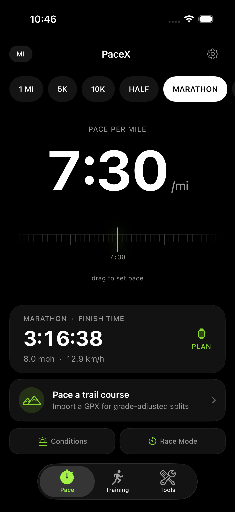

Goal pace
Translate a finish-time ambition into a pace you can take to the road.
Running companion
A focused training companion for understanding pace, setting a race goal, and knowing the next useful number before you run.
iPhone, Watch & widgetsRace planningTraining insights

Run with a plan
PaceX turns a goal into a practical pace, then keeps race prediction, remaining pace, and training zones within reach.
Translate a finish-time ambition into a pace you can take to the road.
Explore the relationship between today’s effort and the next start line.
Make the effort behind each run understandable, not abstract.